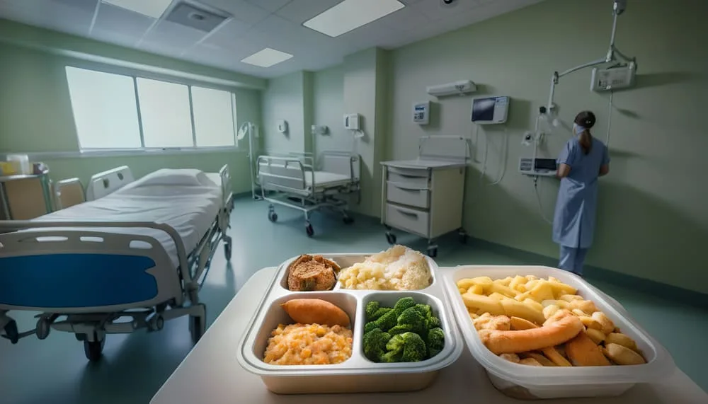
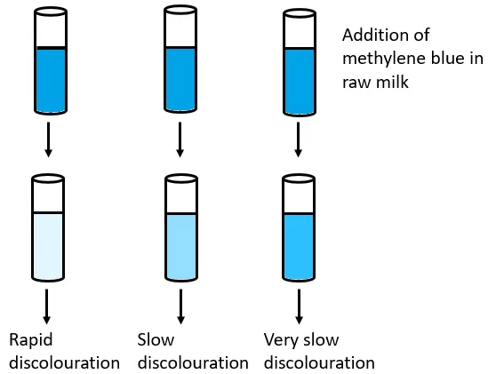
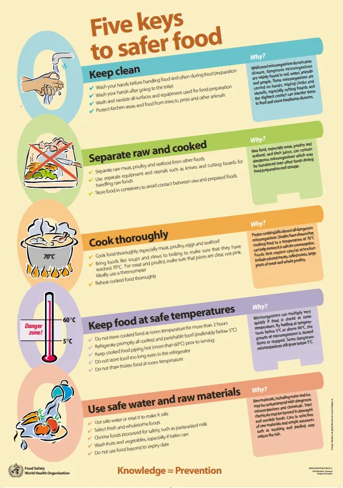

Expanded Nursing Uganda Explanation
Food hygiene should be understood beyond a short definition. Link the concept to patient history, focused assessment, common risks, nursing priorities, documentation and evaluation of outcomes.
Contents, 21 sections (tap to expand)
01 Food Hygiene and Control
Food hygiene refers to all the conditions and measures necessary to ensure the safety and suitability of food at all stages of the food chain. Poor food hygiene is a major cause of foodborne illnesses, which can range from mild gastroenteritis to life-threatening infections.
02 Introduction to Food Hygiene
- Food is a potential source of infection and is liable to contamination by microbes at any point during its journey from the producer to the consumer.
- Food hygiene may be defined as the sanitary science which aims to produce food which is safe for the consumer and of good keeping quality.
- It covers a wide field and includes the rearing, feeding, marketing and slaughter of animals as well as the sanitation procedures designed to prevent bacteria of human origin reaching food stuff.
- Food hygiene in its widest sense, implies hygiene in the production, handling, distribution and serving.
- WHO (1984) has defined food hygiene as all conditions and measures that are necessary during production, processing, storage, distribution and preparation of food to ensure that it is safe, wholesome and fit for human consumption.
- The primary aim of food hygiene is to prevent food poisoning and other food borne illness.
03 Care of Food and Milk in the Home
Proper handling and storage of food at home is the first line of defense against foodborne diseases.
- Hand Washing: Always wash hands with soap and water before handling food and after using the toilet, handling raw meat, or touching pets.
- Separate Raw and Cooked Foods: Use separate utensils, cutting boards, and plates for raw meat, poultry, and seafood to prevent cross-contamination .
- Cook Thoroughly: Cook food to the proper internal temperature to kill harmful bacteria like Salmonella and E. coli .
- Proper Storage: Refrigerate perishable foods promptly.
- Keep food covered to protect it from flies, dust, and other contaminants.
- Store food in clean, pest-proof containers.
- Care of Milk: Milk is an excellent medium for bacterial growth. It should be stored in a cool place, preferably a refrigerator.
- It must be kept covered at all times.
- Pasteurization (heating to a specific temperature for a set period) is the most common method to kill harmful bacteria in milk without significantly affecting its nutritional value. Boiling milk at home serves a similar purpose.
- Cleanliness of Kitchen: Keep all kitchen surfaces, utensils, and dishcloths clean.
04 Hospital Food Hygiene Regulation
Food hygiene in a hospital setting is of utmost importance, as patients are often more susceptible to infection. Regulations include:
- Designated Kitchen Area: A well-ventilated, well-lit kitchen that is easy to clean and separate from patient care areas.
- Food Handler Health: All kitchen staff must be medically cleared, free from communicable diseases, and practice excellent personal hygiene. They should be screened regularly.
- Strict Handling Protocols: Adherence to all principles of food safety, including temperature control, prevention of cross-contamination, and proper storage.
- Special Diets: Proper procedures for preparing therapeutic diets for patients with specific needs.
- Waste Disposal: An effective system for disposing of food waste to prevent attracting pests.
05 Control of Purity and Quality of Food
Ensuring food is pure and of good quality involves several layers of control, from government regulation to individual responsibility.
- Government Regulation: Health authorities inspect food production facilities, markets, and restaurants to ensure they comply with safety standards.
- Food Sourcing: Purchase food from reputable sources. Avoid food with damaged packaging, signs of spoilage (bad smell, discoloration), or food sold in unsanitary conditions.
- Control of Adulteration: Adulteration is the act of intentionally adding cheaper, non-nutritious, or harmful substances to food to increase quantity. This is illegal and controlled through inspection and laboratory testing.
- Proper Labeling: Food labels should provide accurate information about ingredients, nutritional content, and expiration dates.
06 Food Control
The objective of control has three aspects:
- Economic
- Aesthetic
- Public health
07 Different Branches of Food Hygiene
Different branches of food hygiene include:
- Milk hygiene
- Meat hygiene
- Fish hygiene
- Egg hygiene
- Hygiene of vegetables and fruits
- Food handlers hygiene
- Sanitation of eating place.
08 Milk Hygiene
- Milk is an efficient vehicle for a great variety of disease agents.
- Milk get contaminated by various sources like udder, utensils, personal hygiene of the handlers, storage environment, water etc.
A joint FAO/WHO expert committee (1970) on milk hygiene classified milk borne disease as under:
- Tuberculosis
- Streptococcal infections
- Anthrax
Unpasteurized or contaminated milk can be a vehicle for many serious diseases:
- Tuberculosis (Bovine TB): From infected cows.
- Brucellosis (Undulant Fever): From infected cows or goats.
- Typhoid and Paratyphoid Fever: From contamination by human carriers.
- Diphtheria and Scarlet Fever: From contamination by human carriers.
- Q Fever: A rickettsial disease.
- Gastroenteritis: From various bacteria like Salmonella or E. coli .
Pasteurization and boiling are the primary methods for making milk safe.
To ensure milk is clean and safe, the following principles must be followed:
- First essential is a healthy and clean animal.
- Secondly, the premises where the animal is housed and milked should be sanitary.
- Milk vessels must be sterile and kept covered.
- Water supply should be bacteriologically safe.
- Milk handlers must be free from communicable diseases.
- Milk should be cooled immediately to 10°c after it is drawn to retard bacterial growth.
- It is indirect method for detection of microorganisms in milk.
- Test is carried out on the milk accepted for pasteurization.
- Definite quantity of methylene blue is added to 10 ml of milk and sample is held at a uniform temperature of 37 deg.c until the blue colour is disappeared.
- This test serves as confirmation of heavy contamination and compared with direct counts of bacteria, it saves time and money.
- Holder (VAT) method - in this process milk is kept at 63-66°c for at least 30 min and cooled to 5°c.
- HTST (High-Temperature Short-Time) method - milk is rapidly heated to a temperature of nearly 72°c is held at that temperature for not less than 15 sec and is then rapidly cooled to 4°c.
09 Meat Hygiene
The diseases which may be transmitted by eating unwholesome meat are:
- Tapeworm infestations
- Tinea saginata
- Trichinella spiralis
- Fasciola hepatica
- Actinomycosis
- Tuberculosis
- Food poisoning
- Animal intended for slaughter are subjected to proper ante mortem and post mortem inspection by qualified veterinary staff.
- Meat inspection is a very important process before being accepted or rejected.
The term ante-mortem means "before death". Is the inspection of live animals and birds prior to being slaughtered.
- To screen all animals destined to slaughter.
- To ensure that animals are properly rested and that proper clinical information, which will assist in the disease diagnosis and judgement is obtained.
- To identify sick animals.
- Exhaustion
- Emaciation
- Pregnancy
- Sheep pox
- Brucellosis
- Diarrhoea
- Routine postmortem examination of a carcass should be carried out as soon as possible after the completion of dressing.
- It helps to detect abnormalities, so that products only conditionally fit for human consumption are passed as food.
- Inflammation of joints
- Lesions in different organs
- Cysticercus bovis , liver fluke, abscesses, Sarcocystis sps , hydatidosis, septicaemia, parasitic and nodular infections of liver and lungs, tuberculosis, Cysticercus cellulosae .
- It should be neither pale pink nor a deep purple tint.
- Firm
- Elastic to touch
- Should not be slimy
- Have an agreeable odour.
10 Slaughter House Hygiene
- Hygiene of slaughter house is important to prevent contamination of meat during the process of dressing.
- There is a model public health act (1955) in India, which standardizes on the location, structure, disposal of wastes, water supply, examination of animals, storage of meat, transportation of meat and miscellaneous other activities connected with meat processing.
- Location: Preferably away from residential areas.
- Structure: Floors and walls up to 3 feet should be impervious and easy to clean.
- Disposal of wastes: Blood, offal, etc... should not be discharged into public sewers but should be collected separately.
- Water Supply: should be independent, adequate and continuous.
- Examination of animals: Antemortem and postmortem examination to be arranged. Animals or meat found unfit for human consumption should be destroyed or denatured.
- Miscellaneous: animals other than those to be slaughtered should not be allowed inside the shed.
- Storage of meat: Meat should be stored in fly-proof and rat-proof rooms; for overnight storage, the temperature of the room shall be maintained below 5°C.
- Transportation of meat: Meat shall be transported in fly-proof covered vans.
11 Fish Hygiene
- Fish deteriorates or loses its freshness because of autolysis which sets in after death and because of the bacteria with which they become infected.
- Stale fish should be condemned.
- The signs of fresh fish: It is in a state of stiffness or rigor mortis
- The gills are a bright red
- The eyes are clear and prominent
Inspection of tinned fish-
- The tin must be new and clean without leakages or rusting.
- There should be no evidence of having been tampered with such as sealed openings.
- On opening the tin, the contents should not blown out which indicates decomposition.
12 Egg Hygiene
- Although the majority of freshly laid eggs are sterile inside, the shells become contaminated by faecal matter from the hen.
- Microorganisms including pathogenic Salmonella can penetrate a cracked shell and enter the egg yolk leading to spoilage.
- Eggs can also be pasteurized to increase the shelf life.
13 Fruits and Vegetables Hygiene
- Vegetables & fruits host many pathogens like bacteria, fungal, protozoan which can enter the plant material during or after harvesting.
- Generally proper washing and sanitization are employed to increase shelf life and product safety.
- Freshly harvested products are routinely washed to remove soils, pesticide residues, insects, plant debris, and microbes.
14 Hygiene for Food Handlers
- Food sanitation rests directly upon the state of personal hygiene and habits of the person working in food industries.
- The infections which are likely to be transmitted by the food handlers are diarrhoea, dysenteries, typhoid and para-typhoid fevers, entero-viruses, viral hepatitis, protozoa cysts, eggs of helminthes, streptococcal and staphylococcal infections and salmonellosis.
Food safety principles that all food handlers should follow:
- KEEP CLEAN - Wash your hands and all surfaces that come into contact with food.
- SEPARATE RAW AND COOKED FOOD - Keep raw meat, poultry and seafood separate from other foods.
- COOK FOOD THOROUGHLY - Cook food to 70°C to kill most microorganisms.
- KEEP FOOD AT SAFE TEMPERATURES - Avoid storing food between 5 and 60°C, especially at room temperature.
- USE SAFE WATER AND RAW MATERIALS - Wash fruits and vegetables with safe water.
- Medical examination carried out of all food handlers at the time of employment. Any person with a history of typhoid fever, diphtheria, chronic dysentery, tuberculosis or any other communicable disease should not be employed.
- Persons with wounds, skin infections should not be permitted to handle food or utensils.
- The day to day health appraisal of the food handlers is also equally important; those who are ill should be excluded from food handling.
- Any illness which occurs in a food handler's family should at once be notified.
- Education of food handlers in matters of personal hygiene, food handling, utensils, dishwashing, and insect and rodent control is the best means of promoting food hygiene.
- (a) Hands: The hands should be clean at all times. scrubbed and washed with soap and water immediately after visiting a lavatory. nails to be kept trimmed and free from dirt.
- (b) Hair - to provide covering to the head.
- (c) Overalls: Clean white overalls to be worn by all food handlers.
- (d) Habits: Coughing and sneezing in the vicinity of food, licking the fingers before picking up an article of food, smoking on food premises are to be avoided.
15 Sanitation of Eating Places
- It is a challenging problem in India.
- There some minimum standards suggested for restaurants and eating places in India under the MODEL PUBLIC HEALTH ACT, govt.of India(1955).
- Location: Shall not be near filth or open drain, stable, manure pit and other sources of nuisances.
- Floors: To be higher than the adjoining land, made with impervious material and easy to keep clean.
- Rooms: (a) Rooms where meals are served shall not be less than 100 sq. feet and shall provide accommodation for a maximum of 10 persons.
- (b) Walls up to 3 feet should be smooth, corners to be rounded; should be impervious and easily washable.
- c) Lighting and ventilation - ample natural lighting facilities aided by artificial lighting with good circulation of air are necessary.
- (4) Kitchen: It should be ample floor space, window opening, proper flooring and ventilation.
- (5) Storage of cooked food: Separate room to be provided. For long storage, control of temperature is necessary.
- (6) Storage of uncooked foodstuffs. Perishable and non-perishable articles to be kept separately in rat-proof and vermin-proof space; for storage of perishable articles temperature control should be adopted.
- Furniture: Should be reasonably strong and easy to keep clean and dry.
- (8) Disposal of refuse: To be collected in covered, impervious bins and disposed of twice a day.
- (9) Water supply: To be an independent source, adequate, continuous and safe.
- (10) Washing facilities: To be provided. Cleaning of utensils and crockery to be done in hot water and followed by disinfection.
16 Foodborne Poisoning and Infections
Foodborne illnesses are caused by consuming contaminated food or beverages.
- Foodborne Infection: Caused by ingesting food containing live bacteria, viruses, or parasites which then grow in the human body and cause illness. Examples include Salmonella , E. coli , and Hepatitis A .
- Food Poisoning (Intoxication): Caused by ingesting food that contains toxins produced by bacteria (e.g., Staphylococcus aureus , Clostridium botulinum ). The illness is caused by the toxin itself, not a live infection. Symptoms often appear more rapidly than with infections.
17 HACCP
- H azard A nalysis and C ritical C ontrol P oints
- The HACCP system, which is science based and systematic, identifies specific hazards and measures for their control to ensure the safety of food.
- HACCP is a tool to assess hazards and establish control systems that focus on prevention rather than relying mainly on end-product testing.
- Any HACCP system is capable of accommodating change, such as advances in equipment design, processing procedures or technological developments.
- The successful application of HACCP requires the full commitment and involvement of management and the work force.
- It also requires a multidisciplinary approach; this multidisciplinary approach should include, when appropriate, expertise in agronomy, veterinary health, production, microbiology, medicine, public health, food technology, environmental health, chemistry and engineering, according to the particular study.
- The application of HACCP is compatible with the implementation of quality management systems, such as the ISO 9000 series, and is the system of choice in the management of food safety within such systems.
- Analyze Hazards
- Identify Critical Control Points
- Establish Critical Limits for each Critical Control Point
- Establish Monitoring Procedures
- Establish Corrective Actions
- Establish Verification Activities
- Establish Records and Documentation
- What is cross-contamination , and what is one practical way to prevent it in a home kitchen?
- Why is milk considered a particularly high-risk food? Name two diseases that can be transmitted through contaminated milk.
- Explain the difference between a foodborne infection and food poisoning (intoxication) .
- List four key principles of food hygiene that should be practiced in the home.
- Why are food hygiene standards especially critical in a hospital setting?
18 Nursing Uganda Clinical Lens
Use Food hygiene as a practical nursing topic, not only a memorized definition. Link cause, transmission, incubation, clinical features, treatment support and prevention.
- What to understand first: define food hygiene, identify the normal or expected pattern, then explain what changes when the patient is unwell.
- Why it matters in care: the nurse must recognize risk early, explain findings clearly, document accurately and know when to escalate.
- How to revise it: connect each point to assessment, nursing diagnosis or care problem, intervention, rationale and evaluation.
19 Assessment Guide
- Temperature, pulse, respiratory status, hydration, pain, rash, wounds, stool, urine or sputum changes.
- Exposure history, travel, contacts, vaccination status and comorbidities.
- Specimen orders, isolation needs, antimicrobial history and danger signs.
20 Nursing Priorities, Rationales and Outcomes
- Use standard precautions and transmission-based precautions where needed.
- Support hydration, nutrition, medicines, monitoring and early referral for severe disease.
- Teach prevention, adherence, hygiene, safe water, vector control or contact tracing as relevant.
The rationale for these priorities is patient safety: nursing actions should prevent deterioration, reduce discomfort, support recovery and create clear evidence for the next caregiver.
- Expected outcome: Symptoms improve, complications are detected early, transmission risk is reduced and treatment is completed correctly.
21 Patient Teaching and Revision Check
- Explain food hygiene in simple language the patient or caregiver can repeat back.
- Teach warning signs, medicine or follow-up instructions, hygiene or lifestyle points where relevant.
- For exams, prepare a short answer using: definition, causes or risk factors, signs, assessment, management, complications and prevention.
- For ward practice, document baseline findings, actions taken, patient response and the plan for review.
Illustrations and Diagrams (3)



Related Video Lectures
Watch nursing lecture videos on YouTube for this topic. Opens in a new tab.
Watch on YouTubeExternal link: YouTube may use its own cookies and terms. Nursing Uganda is not affiliated with YouTube.